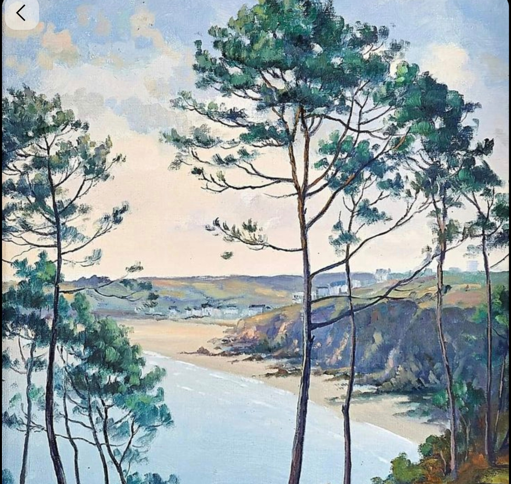

Cérémonie : Eglise Notre Dame de Larmor, Larmor-Plage
Réception : Manoir de Kerangosker, Pont-Aven

Eglise de Larmor-Plage et photos ensemble sur la plage après la cérémonie (plage de Thoulars ou Port Maria)
Dans les jardins du Manoir de Kerangosker
Orangerie du Manoir de Kerangosker
Orangerie du Manoir de Kerangosker
On prolonge ce moment tous ensemble !
Pour profiter encore ensemble, nous vous convions à un déjeuner breton décontracté.
Babette et Paul sauront nous régaler avec deux crêpes salées et deux crêpes sucrées par personne !
Horaire : À partir de 12h00
Lieu : Au Manoir de Kerangosker
Merci de bien vouloir nous confirmer votre présence avant le 25 avril 2026, y compris pour le lendemain.
Remplir le formulaire(Le lien sera bientôt actif)
Nous nous sommes toujours dit qu'un jour nous partirions au Japon et que ce sera notre plus beau voyage !
LienTout ce que vous devez savoir pour préparer votre venue.
Aucun thème particulier, de la couleur et vos sourires !
Voici les pricipales options qui s'offrent à vous pour nous rejoindre.
Pour nous rejoindre à la cérémonie à Larmor-Plage :
Pour nous rejoindre près du domaine :
Autoroute A11 et N165.
Distance : ~530 km
Temps estimé : 5h30 (selon trafic)
Disponibles aux gares de Quimper, Quimperlé et Lorient.
Pour faciliter l'organisation entre la cérémonie à Larmor et la réception à Pont-Aven, merci de nous indiquer si vous avez besoin d'une solution de covoiturage ou que vous disposez des places disponibles dans votre voiture.
Hôtels, gîtes ou plein air, voici nos recommandations.
Pont-Aven est une ville touristique, nous vous conseillons de réserver dès que possible.
Profitez de ce week-end pour étendre votre séjour!